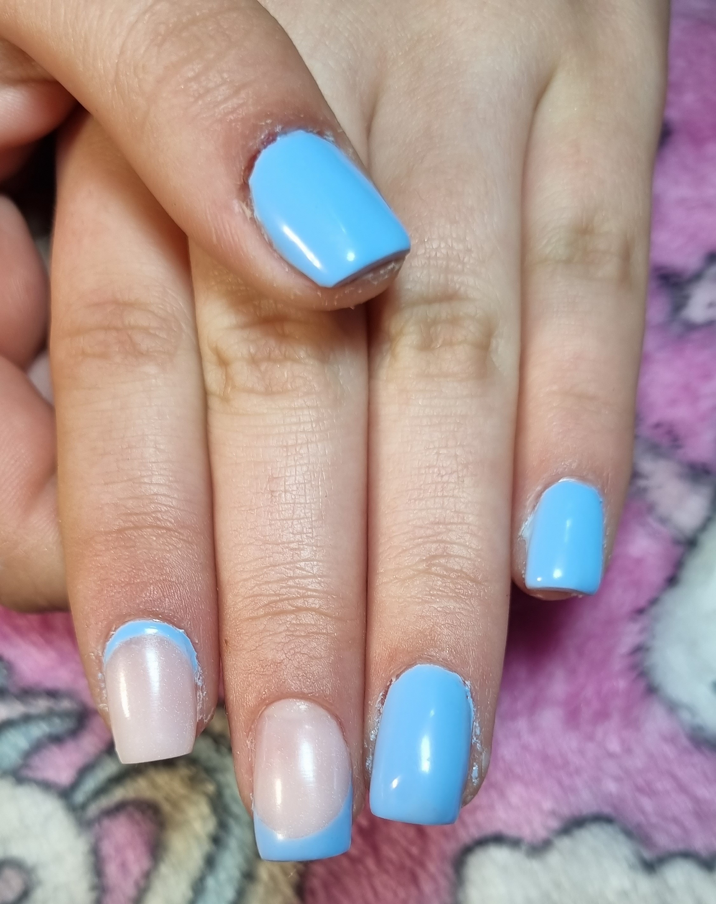

Uñicornio Diseño de uñas
¿Quien soy?
¡Bienvenidos a Uñicornio!
En Uñicornio, estamos comprometidos con la creación de experiencias únicas y la elevación de la belleza de tus manos a un nivel superior. Me presento soy Jorgelina, una experta apasionada y altamente calificada que se enorgullece de transformar cada sesión de manicura en un momento de lujo y cuidado personalizado.
Te dejo algunos de mis trabajos
